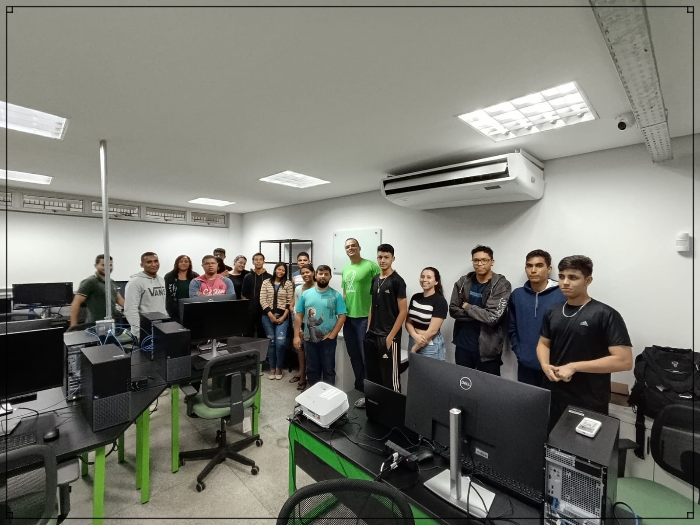

SOBRE O CURSO
Durante esses intensivos 10 dias, exploramos conceitos fundamentais como números inteiros, números de ponto flutuante, strings, booleanos entre outros assuntos importantes. Através de uma combinação de teoria e prática, desenvolvemos uma compreensão desses conceitos essenciais, permitindo-nos avançar para projetos práticos.
Sob a orientação do Professor Roberto, criamos uma variedade de aplicativos, desde simples relógios digitais e calculadoras até jogos interativos como o famoso jogo da velha. Além disso, exploramos aplicações básicas de cadastro e aprendemos a criar funções para automatizar tarefas repetitivas.
Apesar do curto período de tempo, nossa turma composta por 18 alunos mergulhou em cada desafio, aproveitando ao máximo o momento de aprendizado e colaboração. O ritmo acelerado do curso nos desafiou a explorar o vasto potencial da linguagem Python.
Este curso foi uma experiência que nos equipou com habilidades valiosas para a introdução a tecnologia. Estamos gratos ao Professor e a Instituição por sua dedicação, expertise e paixão por compartilhar conhecimento.
Quarta-Feira: 03 Abril, 2024, GO